This post is an implementation of the Feature-Based Expected Goals (xG) Model from Section 2.4 of Jonathan Arsenault’s PhD thesis.
Author
Howard Baik
Published
June 17, 2026
Introduction
This post is an implementation of the Feature-Based Expected Goals (xG) Model from Section 2.4 of Jonathan Arsenault’s PhD thesis. As the thesis puts it, “xG models use a supervised learning algorithm to establish a mapping between a set of features that describe a shot and the probability of the shot resulting in a goal.” Here, those features come from event and tracking data and capture shooter location, shooter motion, pressure from defenders, pre-shot puck movement, traffic in the shooting lane, and goaltender positioning. We will create each of these features, then train an XGBoost model to predict each shot’s probability of becoming a goal.
We will use data from the Big Data Cup 2026, which spans 10 games and combines Stathletes-tracked event data with player tracking data generated from broadcast video.
All code is written using Claude Opus 4.8 and verified by the author.
Data Import
We import the data from the Big Data Cup 2026 GitHub repository and tag each events and tracking data with a Game ID. Then, we convert the clock strings (“MM:SS” / “M:SS”) to total seconds for easier comparison and joining between the events and tracking datasets. The tracking data is separated by period (P1/P2/P3/OT), so we combine all the tracking files into one dataset of every tracked player-frame across all games and periods.
Show code
import polars as plfrom great_tables import GTimport mathimport jsonimport urllib.request, io# Convert clock strings ("MM:SS" / "M:SS") to total seconds.# events.Clock uses zero-padded minutes ("09:30"); tracking "Game Clock" is unpadded ("9:30").# Casting both to integer seconds makes them directly comparable for joins.def clock_to_seconds(col): parts = pl.col(col).str.split(":")return ( parts.list.get(0).cast(pl.Int64) *60+ parts.list.get(1).cast(pl.Int64) )# Add the seconds column and slot it right after its source column.def add_seconds_after(df, src, new): df = df.with_columns(clock_to_seconds(src).alias(new)) cols = [c for c in df.columns if c != new] cols.insert(df.get_column_index(src) +1, new)return df.select(cols)# Every game is read directly from the Big Data Cup 2026 release (no local download).# Each row is tagged with a "Game" id (the filename stem, e.g. "2025-10-11.Team.A.@.Team.D"),# identical for a game's Events and Tracking files. That key is required downstream: the# shots<->tracking joins match on Period + Frame, but Frame is only a per-game counter, so# without "Game" they would cross-match rows between different games._RELEASE_API ="https://api.github.com/repos/bigdatacup/Big-Data-Cup-2026/releases/tags/Data"_assets = {a["name"]: a["browser_download_url"]for a in json.load(urllib.request.urlopen(_RELEASE_API))["assets"]}def _read_url(url, **kwargs):return pl.read_csv(io.BytesIO(urllib.request.urlopen(url).read()), **kwargs)# Events: one file per game.event_frames = []for name, url in _assets.items():ifnot name.endswith(".Events.csv"):continue game = name[: -len(".Events.csv")] df = _read_url(url, schema_overrides={"Player_Id": pl.String, "Player_Id_2": pl.String}) df = add_seconds_after(df, "Clock", "Clock_Seconds") df = df.with_columns(pl.lit(game).alias("Game")) event_frames.append(df)events = pl.concat(event_frames)# Tracking: P1/P2/P3 (+ POT overtime). ".Tracking_P" excludes Shifts and camera_orientations.track_frames = []for name, url in _assets.items():if".Tracking_P"notin name:continue game = name.split(".Tracking_")[0] df = _read_url(url, schema_overrides={"Rink Location Z (Feet)": pl.Float64, "Period": pl.String}).drop("Player Id")# Overtime tracking labels Period as "OT"; events use 4 for OT. Normalize to 4 (Int64)# so the dtype is consistent across files and OT shots can join their tracking frames. df = df.with_columns(pl.col("Period").replace("OT", "4").cast(pl.Int64)) df = add_seconds_after(df, "Game Clock", "Game_Clock_Seconds") df = df.with_columns(pl.lit(game).alias("Game")) track_frames.append(df)# One table of every tracked player-frame across all games and periods.tracking = pl.concat(track_frames)
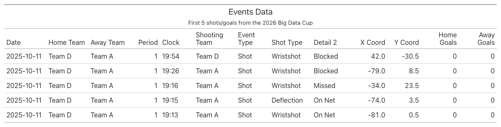
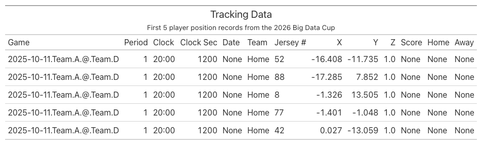
Distribution of Shot Types
We look at the distribution of shot types in the events dataset. We filter for Shot and Goal events and count the number of unique occurences of the Detail 1 column, which indicates the type of shot taken. We then visualize this distribution using a bar chart.
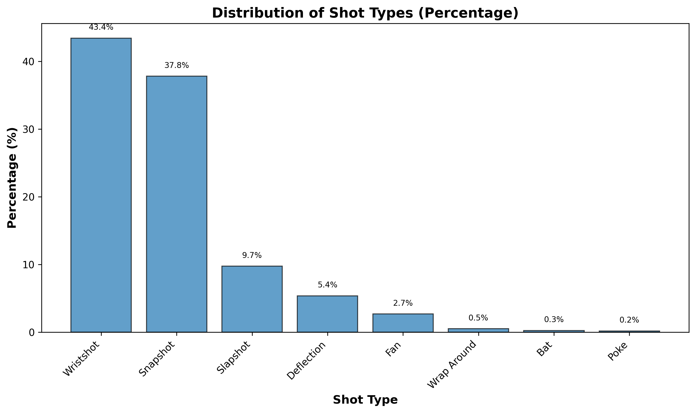
Show code
shot_types = ( events.filter(pl.col("Event").is_in(["Shot", "Goal"])) .group_by("Detail_1") .agg(pl.len().alias("count")) .with_columns((pl.col("count") / pl.col("count").sum()).alias("pct")) .sort("count", descending=True))import matplotlib.pyplot as pltfig, ax = plt.subplots(figsize=(10, 6))# Create bar chart with percentagesax.bar(shot_types["Detail_1"], shot_types["pct"] *100, color="#1f77b4", edgecolor="black", alpha=0.7)# Customize the plotax.set_xlabel("Shot Type", fontsize=12, fontweight="bold")ax.set_ylabel("Percentage (%)", fontsize=12, fontweight="bold")ax.set_title("Distribution of Shot Types (Percentage)", fontsize=14, fontweight="bold")# Rotate x-axis labels for better readabilityplt.xticks(rotation=45, ha="right")# Add percentage labels on top of barsfor i, v inenumerate(shot_types["pct"]): ax.text(i, v *100+1, f"{v*100:.1f}%", ha="center", va="bottom", fontsize=8)plt.tight_layout()plt.show()
The shot type distribution in our dataset is very similar to the thesis’s dataset. Table 2.1 from the thesis reveals that Wrist Shots (47.8%) and Snap Shots (25.5%) are the most common, followed by Slap Shots (15.6%) and Deflections (4.5%).
Distribution of Shot Outcomes
We look at the shot outcomes in the events dataset. We filter for Shot and Goal events and count the number of unique occurences of the Detail 2 column, which indicates the outcome of the shot (e.g., On Net, Missed, Blocked).
Show code
descriptions = {"Saved": "The shot is on target and saved by the goaltender.","Goal": "The shot is on target and not saved by the goaltender, resulting in a goal.","Blocked": "The shot is blocked by a skater from the defending team.","Missed": "The shot is not on target.",}shot_outcomes = ( events.filter(pl.col("Event").is_in(["Shot", "Goal"])) .with_columns( pl.when(pl.col("Event") =="Goal") .then(pl.lit("Goal")) .when((pl.col("Event") =="Shot") & (pl.col("Detail_2") =="On Net")) .then(pl.lit("Saved")) .when((pl.col("Event") =="Shot") & (pl.col("Detail_2") =="Blocked")) .then(pl.lit("Blocked")) .when((pl.col("Event") =="Shot") & (pl.col("Detail_2") =="Missed")) .then(pl.lit("Missed")) .alias("Outcome") ) .group_by("Outcome") .agg(pl.len().alias("count")) .with_columns((pl.col("count") / pl.col("count").sum()).alias("pct")) .with_columns(pl.col("Outcome").replace(descriptions).alias("Description")) .select("Outcome", "Description", "pct") .sort("pct", descending=True))( GT(shot_outcomes) .tab_header(title="Distribution of shot outcomes in the dataset") .cols_label( Outcome="Shot Outcome", Description="Description", pct="% of Shots", ) .fmt_percent("pct", decimals=1) .cols_width({"Outcome": "130px", "Description": "420px", "pct": "110px"}))
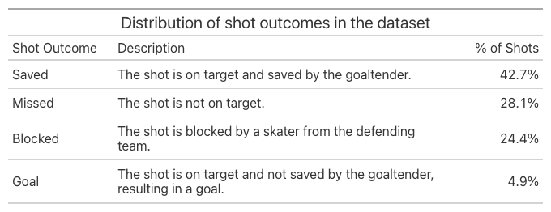
Again, the shot outcome distribution in our dataset is very similar to the thesis’s dataset. Table 2.2 from the thesis shows that the Saved outcome is the most common (48.3%), followed by Blocked (26.0%), Missed (21.4%), and Goal (4.21%). It is perfectly normal for the Goal outcome to be the least common, as goals are rare in hockey.
Distribution of Shot Location
We look at the distribution of shot locations in the events dataset. We filter for Shot and Goal events and visualize the distribution of the X_Coordinate and Y_Coordinate columns on a half-sized ice rink, along with the shot angle.
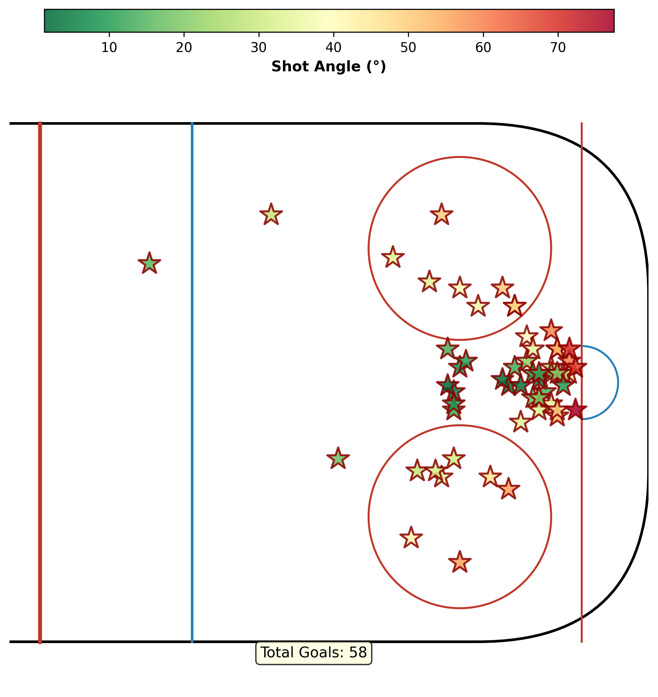
There are 58 goals in our 10-game dataset and most of the goals are from the high-danger areas of the rink: in front of the goal and near the goal line. Low shot angles mean the shot was taken from the area in front of the goaltender, a high-danger area of the rink. High shot angles mean that the shot was taken from the area near the boards, a low-danger area of the rink.
Feature Engineering
We extract features from the events and tracking* data for the Features-Based xG Model in the thesis. Since the thesis certainly draws on different data than the 2026 Big Data Cup, we make a few assumptions along the way to match its features as closely as possible.
Shot Location
Section 2.4.1.1 of the thesis defines three shot-location variables: the shot angle, the shot distance, and the meridian distance.
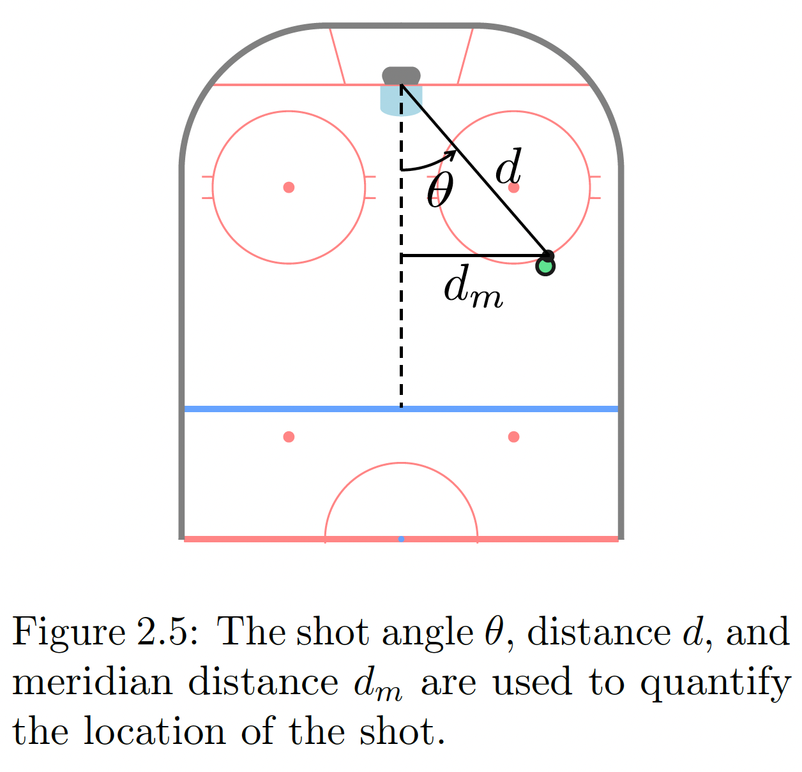
The shot angle \(\theta\) in degrees is defined as:
\[
\theta =\frac{180}{\pi} \left| \text{atan2}(y, x - 89) \right|.
\]
The meridian distance \(d_m\) is the perpendicular distance from the shot location to the meridian (the “royal road” running down the center of the ice).
The shot distance \(d\) is the distance between the shot location and the goal.
Show code
( events .filter(pl.col("Event").is_in(["Shot", "Goal"]))# Normalize to right side .with_columns( pl.when(pl.col("X_Coordinate") <0) .then(-pl.col("X_Coordinate")) .otherwise(pl.col("X_Coordinate")) .alias("X_Coordinate"), pl.when(pl.col("X_Coordinate") <0) .then(-pl.col("Y_Coordinate")) .otherwise(pl.col("Y_Coordinate")) .alias("Y_Coordinate"), )# Shot angle (degrees) and meridian distance .with_columns( ( pl.arctan2(pl.col("Y_Coordinate"), 89- pl.col("X_Coordinate")) .abs()* (180/ math.pi) ).alias("Shot_Angle"), pl.col("Y_Coordinate").abs().alias("d_m"), )# Distance via trigonometry: d = d_m / sin(θ), fallback to (89 - x) when Y = 0 .with_columns( pl.when(pl.col("d_m") ==0) .then(89- pl.col("X_Coordinate")) .otherwise( pl.col("d_m") / (pl.col("Shot_Angle") * math.pi /180).sin() ) .alias("d_trig"),# Euclidean distance as sanity check ((89- pl.col("X_Coordinate")).pow(2) + pl.col("Y_Coordinate").pow(2)) .sqrt() .alias("d_euclidean"), ))
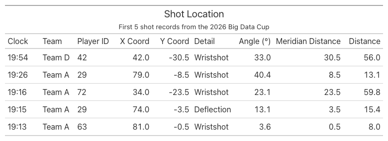
Shooter Motion
Section 2.4.1.2 of the thesis describes two additional features: shooter’s speed and direction of travel. For convenience, our model only uses shooter’s speed, which is the magnitude of the shooter’s velocity at the instant of their shot.
There are a few parameters we set before the feature engineering process:
FPS = 30 is the tracking frame rate (frames per second). The tracking dataset contains the Image ID column, whose suffix is a frame counter that ticks ~30 times per game-clock second (e.g. _066486 -> _066487 -> _066488). On average, there are 30 frames per game-clock second, and we store this information in FPS to convert frames to seconds using this formula:
SMOOTH_K = 3 is the window (in frames) used to estimate speed by central difference. Rather than measuring how far a player moved between two adjacent frames, which is noisy, we compare the player’s position SMOOTH_K frames ahead with their position SMOOTH_K frames behind, then divide by the time that elapsed between those two samples:
This method averages out per-frame jitter and gives a more stable speed estimate.
FT_PER_S_TO_MPH = 0.6818 is the conversion factor from feet per second (fps) to miles per hour (mph).
MAX_SPEED_MPH = 30.0 is the maximum speed (in mph) we consider valid for our model. In the 25/26 NHL season, the maximum skating speed for a player was just under 25 mph, so a speed above 30 mph is determined a tracking glitch.
To compute player speed, we first restrict the tracking data to player rows, excluding the puck. We read the frame number from the suffix of the Image Id column, so that an Image Id of 2025-10-11 Team A @ Team D_065468 gives frame 065468. After sorting each player’s frames in chronological order, we take the change in x and y across the SMOOTH_K-frame central-difference window and divide the resulting Euclidean displacement by the elapsed time, converting frames to seconds with the FPS = 30 factor introduced above. We call this new dataset “players”.
Show code
FPS =30SMOOTH_K =3FT_PER_S_TO_MPH =0.6818MAX_SPEED_MPH =30.0MAX_SPEED_FPS = MAX_SPEED_MPH / FT_PER_S_TO_MPHplayers = ( tracking .filter(pl.col("Player or Puck") =="Player") .with_columns(# Numeric frame index from the Image Id suffix, and jersey as a string for matching. pl.col("Image Id").str.split("_").list.last().cast(pl.Int64).alias("Frame"), pl.col("Player Jersey Number").cast(pl.String).alias("Jersey"), )# Drop rows whose jersey couldn't be read: they'd all collapse into one bogus "null"# track, and differencing positions of *different* players invents huge fake speeds. .filter(pl.col("Jersey").is_not_null())# Order each player's frames in time so shift() walks consecutive samples. .sort(["Game", "Period", "Team", "Jersey", "Frame"]) .with_columns(# Central difference over +/- SMOOTH_K frames, partitioned per player-period. (pl.col("Rink Location X (Feet)").shift(-SMOOTH_K) - pl.col("Rink Location X (Feet)").shift(SMOOTH_K)) .over(["Game", "Period", "Team", "Jersey"]).alias("dx"), (pl.col("Rink Location Y (Feet)").shift(-SMOOTH_K) - pl.col("Rink Location Y (Feet)").shift(SMOOTH_K)) .over(["Game", "Period", "Team", "Jersey"]).alias("dy"), (pl.col("Frame").shift(-SMOOTH_K) - pl.col("Frame").shift(SMOOTH_K)) .over(["Game", "Period", "Team", "Jersey"]).alias("dframe"), ) .with_columns(# dt = frames / fps (seconds); speed = displacement / dt, in feet per second. ((pl.col("dx") **2+ pl.col("dy") **2).sqrt() / (pl.col("dframe") / FPS)).alias("speed_fps") ) .with_columns(# Null out physically impossible speeds (tracking ID-swaps / position jumps) so# they don't poison the per-shot pick or its fallback median. pl.when(pl.col("speed_fps") <= MAX_SPEED_FPS).then(pl.col("speed_fps")).otherwise(None).alias("speed_fps") ) .with_columns( (pl.col("speed_fps") * FT_PER_S_TO_MPH).alias("speed_mph") ))
Now that we have player speed, we filter the events data for shots and goals, calling this dataset “shots”. We left join “players” onto “shots” to create shooter tracking data, then keep only the shooter’s frames within one second of the shot. Among those, we pick the frame whose tracked position is closest (by Euclidean distance) to where the event records the shot — the moment the tracking best lines up with the recorded release point — and read off the shooter’s speed there. The result is the shots dataset with one shooter-speed column per shot, which we label with shot_id.
Show code
shots = ( events.filter(pl.col("Event").is_in(["Shot", "Goal"])) .with_columns( pl.when(pl.col("Team") == pl.col("Home_Team")).then(pl.lit("Home")) .otherwise(pl.lit("Away")).alias("Track_Team") ) .with_row_index("shot_id"))# Candidate shooter frames: same player, within the event second (+/-1s).cand = ( shots.join( players.select(["Game", "Period", "Team", "Jersey", "Game_Clock_Seconds", "Frame","Rink Location X (Feet)", "Rink Location Y (Feet)", "speed_fps", ]), left_on=["Game", "Period", "Track_Team", "Player_Id"], right_on=["Game", "Period", "Team", "Jersey"], how="left", ) .filter((pl.col("Game_Clock_Seconds") - pl.col("Clock_Seconds")).abs() <=1) .filter(pl.col("Rink Location X (Feet)").is_not_null()& pl.col("Rink Location Y (Feet)").is_not_null()) .with_columns( ((pl.col("Rink Location X (Feet)") - pl.col("X_Coordinate")) **2+ (pl.col("Rink Location Y (Feet)") - pl.col("Y_Coordinate")) **2).sqrt().alias("d_direct"), ((pl.col("Rink Location X (Feet)") + pl.col("X_Coordinate")) **2+ (pl.col("Rink Location Y (Feet)") + pl.col("Y_Coordinate")) **2).sqrt().alias("d_flip"), ) .with_columns( pl.min_horizontal("d_direct", "d_flip").alias("match_dist"), (pl.col("d_flip") < pl.col("d_direct")).alias("used_flip"), ))# Release frame = the candidate closest to the release point (nulls_last so a real# match is never beaten by a missing distance).release = ( cand.sort("match_dist", nulls_last=True) .group_by("shot_id", maintain_order=True) .first() .select(["shot_id", "Frame", "match_dist", "used_flip", "speed_fps"]))# Fallback: representative speed over the whole event-second window.window_med = cand.group_by("shot_id").agg( pl.col("speed_fps").median().alias("speed_fps_window_median"), pl.len().alias("n_candidates"),)# A match is trusted when the closest frame is within ~10 ft and has a defined speed;# otherwise fall back to the window median (flagged), or mark no tracking at all.MAX_MATCH_DIST =10.0shot_speeds = ( shots.join(release, on="shot_id", how="left") .join(window_med, on="shot_id", how="left") .with_columns( pl.when((pl.col("match_dist") <= MAX_MATCH_DIST) & pl.col("speed_fps").is_not_null()) .then(pl.col("speed_fps")) .otherwise(pl.col("speed_fps_window_median")) .alias("shooter_speed_fps"), pl.when((pl.col("match_dist") <= MAX_MATCH_DIST) & pl.col("speed_fps").is_not_null()) .then(pl.lit("matched")) .when(pl.col("speed_fps_window_median").is_not_null()) .then(pl.lit("fallback_window_median")) .otherwise(pl.lit("no_tracking")) .alias("match_quality"), ) .with_columns((pl.col("shooter_speed_fps") *0.6818).alias("shooter_speed_mph")) .sort(["Game", "Period", "Clock_Seconds"], descending=[False, True]))
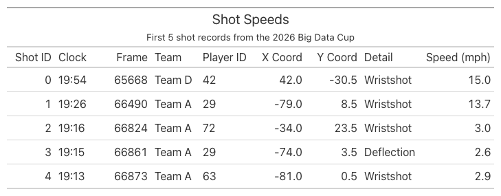
Pressure
In Section 2.4.1.3 of the thesis, pressure is defined as the distance from the shot location to the closest and second-closest defending skater. A continuous distance is more descriptive than counting defenders within 6 ft, and adding the second-closest defender captures pressure from multiple defenders.
To compute pressure, we remove goaltenders from the players dataset and left join the remaining defenders onto the shots dataset, computing the distance from each defender to the shot. For each shot, we then keep the two smallest distances, giving the distance from the shot location to the closest and second-closest defenders.
Show code
# Defending skaters only: opposite tracking team, real jersey numbers, no goalies.defenders = ( players .filter(pl.col("Jersey") !="Go") .select(["Game", "Period", "Team", "Frame","Rink Location X (Feet)", "Rink Location Y (Feet)", ]))# Per shot: the defending team, the release frame, and the shot location in tracking# coordinates (negated when the release match used the flip).shot_frames = ( shots .join(release.select(["shot_id", "Frame", "used_flip"]), on="shot_id", how="left") .with_columns( pl.when(pl.col("Track_Team") =="Home").then(pl.lit("Away")) .otherwise(pl.lit("Home")).alias("Def_Team"), pl.when(pl.col("used_flip")).then(-pl.col("X_Coordinate")) .otherwise(pl.col("X_Coordinate")).alias("Shot_X"), pl.when(pl.col("used_flip")).then(-pl.col("Y_Coordinate")) .otherwise(pl.col("Y_Coordinate")).alias("Shot_Y"), ) .select(["shot_id", "Game", "Period", "Def_Team", "Frame", "Shot_X", "Shot_Y"]))# Join each shot to every defending skater in its release frame; measure distance.pressure = ( shot_frames .join( defenders, left_on=["Game", "Period", "Def_Team", "Frame"], right_on=["Game", "Period", "Team", "Frame"], how="left", ) .with_columns( ((pl.col("Rink Location X (Feet)") - pl.col("Shot_X")) **2+ (pl.col("Rink Location Y (Feet)") - pl.col("Shot_Y")) **2) .sqrt().alias("def_dist") ) .group_by("shot_id", maintain_order=True) .agg( pl.col("def_dist").sort(nulls_last=True).alias("def_dists"), pl.col("def_dist").is_not_null().sum().alias("n_defenders"), ) .with_columns( pl.col("def_dists").list.get(0, null_on_oob=True).alias("closest_def_dist"), pl.col("def_dists").list.get(1, null_on_oob=True).alias("second_closest_def_dist"), ) .drop("def_dists"))# Attach to the shots table for use as expected-goals model features.shot_pressure = shots.join(pressure, on="shot_id", how="left").select("Period", "Clock", "Team", "Player_Id", "Event", "Detail_1","n_defenders", "closest_def_dist", "second_closest_def_dist",)
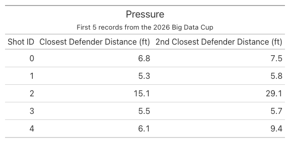
Pre-Shot Movement
Section 2.4.1.4 of the thesis discusses pre-shot movement: how the puck moved in the seconds leading up to the shot. It is a key predictor because lateral puck movement forces the goaltender to move side to side, which can leave them out of position when the shot is released.
This section focuses on the meridian line, which is visualized below:
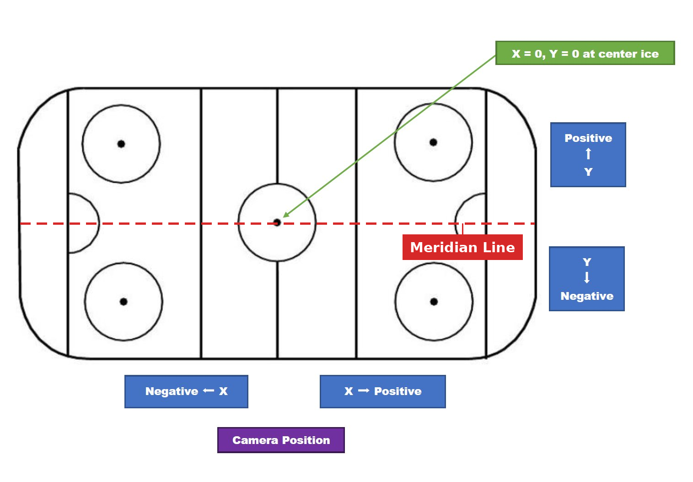
Pre-shot movement features are focused on lateral puck movement (east-west):
Time since the puck last crossed the meridian: Seconds since the puck last crossed the meridian.
Location where the puck crossed the meridian: Measured as the distance to the goal line
Average puck speed: Average puck speed in the 1-second before the shot.
Features 1 and 2 are only defined when the crossing happened within 5-seconds before the shot.
To compute the pre-shot movement features, we first filter for the puck in the tracking dataset. Then, we take the change in x and y across the SMOOTH_K-frame central-difference window and divide the resulting Euclidean displacement by the elapsed time, converting frames to seconds with the FPS = 30 factor introduced above. We call this new dataset “puck”.
Then, we left-join this puck dataset onto the shots dataset and keep only the puck frames within 5 seconds (150 frames) before each shot. The resulting dataset is called the “window” dataset. In the window dataset, a meridian crossing shows up as a sign change in the puck’s y-position between consecutive frames (the puck passed through the y=0 line), so we keep those rows to locate the most recent crossing before the shot. With the resulting rows, we get the first two features: time since meridian crossing and the location where the puck crossed the meridian.
To compute the average puck speed, we filter for rows in the window dataset where there is a 1-second (30 frames) difference in the frame when the shot was taken and the puck tracking frame. Then, we get the average of all the puck speeds recorded for a single shot id to find the average puck speed 1-second before the shot. The resulting average puck speed captures how fast the puck was moving into the shot.
Show code
# The puck moves far faster than skaters, so the 30 mph skater cap doesn't apply; we# only drop physically impossible jumps (tracking glitches) above ~110 mph.MAX_PUCK_SPEED_MPH =110.0MAX_PUCK_SPEED_FPS = MAX_PUCK_SPEED_MPH / FT_PER_S_TO_MPHpuck = ( tracking .filter(pl.col("Player or Puck") =="Puck") .filter(pl.col("Rink Location X (Feet)").is_not_null()) .with_columns( pl.col("Image Id").str.split("_").list.last().cast(pl.Int64).alias("Frame") ) .sort(["Game", "Period", "Frame"]) .with_columns( (pl.col("Rink Location X (Feet)").shift(-SMOOTH_K) - pl.col("Rink Location X (Feet)").shift(SMOOTH_K)).over(["Game", "Period"]).alias("dx"), (pl.col("Rink Location Y (Feet)").shift(-SMOOTH_K) - pl.col("Rink Location Y (Feet)").shift(SMOOTH_K)).over(["Game", "Period"]).alias("dy"), (pl.col("Frame").shift(-SMOOTH_K) - pl.col("Frame").shift(SMOOTH_K)).over(["Game", "Period"]).alias("dframe"), ) .with_columns( ((pl.col("dx") **2+ pl.col("dy") **2).sqrt() / (pl.col("dframe") / FPS)).alias("puck_speed_fps") ) .with_columns( pl.when(pl.col("puck_speed_fps") <= MAX_PUCK_SPEED_FPS).then(pl.col("puck_speed_fps")).otherwise(None).alias("puck_speed_fps") ) .select(["Game", "Period", "Frame", "Rink Location X (Feet)", "Rink Location Y (Feet)", "puck_speed_fps"]) .rename({"Rink Location X (Feet)": "puck_x", "Rink Location Y (Feet)": "puck_y"}))# Per-shot orientation: the shot location in tracking coords (negated when the release# match used the flip) tells us which goal line the team attacks (+89 if X > 0).shot_orient = ( shots.join(release.select(["shot_id", "Frame", "used_flip"]), on="shot_id", how="left") .with_columns( pl.when(pl.col("used_flip")).then(-pl.col("X_Coordinate")).otherwise(pl.col("X_Coordinate")).alias("Shot_X_track") ) .with_columns((pl.col("Shot_X_track") >0).alias("attack_right")) .select(["shot_id", "Game", "Period", "Frame", "attack_right"]) .rename({"Frame": "shot_frame"}))# Puck samples in the same period within 5 s (150 frames) before each shot, with# coordinates normalized to attack-right. (The meridian sign-change is invariant to the# flip; normalizing X only matters for the goal-line distance.)window = ( shot_orient.join(puck, on=["Game", "Period"], how="left") .filter((pl.col("shot_frame") - pl.col("Frame")).is_between(0, 5* FPS)) .with_columns( pl.when(pl.col("attack_right")).then(pl.col("puck_x")).otherwise(-pl.col("puck_x")).alias("px"), pl.when(pl.col("attack_right")).then(pl.col("puck_y")).otherwise(-pl.col("puck_y")).alias("py"), ) .sort(["shot_id", "Frame"]))# Feature 3: average puck speed over the 1 s (30 frames) before the shot.avg_speed = ( window.filter((pl.col("shot_frame") - pl.col("Frame")).is_between(0, 1* FPS)) .group_by("shot_id") .agg(pl.col("puck_speed_fps").mean().alias("avg_puck_speed_fps")) .with_columns((pl.col("avg_puck_speed_fps") * FT_PER_S_TO_MPH).alias("avg_puck_speed_mph")))# Features 1 & 2: the most recent meridian crossing within the 5 s window. A crossing is# a sign change in py between consecutive frames; we linearly interpolate the X where# py = 0, then keep the latest crossing (largest Frame) before the shot.crossings = ( window.with_columns( pl.col("px").shift(1).over("shot_id").alias("px_prev"), pl.col("py").shift(1).over("shot_id").alias("py_prev"), ) .filter(pl.col("py_prev").is_not_null() & (pl.col("py_prev") * pl.col("py") <0)) .with_columns( (pl.col("px_prev") + (pl.col("px") - pl.col("px_prev")) * (0- pl.col("py_prev")) / (pl.col("py") - pl.col("py_prev"))).alias("x_cross") ) .sort(["shot_id", "Frame"]) .group_by("shot_id", maintain_order=True) .last() .with_columns( ((pl.col("shot_frame") - pl.col("Frame")) / FPS).alias("time_since_meridian"), (89- pl.col("x_cross")).alias("meridian_cross_dist"), # negative if crossed behind the net ) .select(["shot_id", "time_since_meridian", "meridian_cross_dist"]))# Attach to the shots table; nulls mark shots with no meridian crossing in the prior 5 s.pre_shot_movement = ( shots.join(crossings, on="shot_id", how="left") .join(avg_speed, on="shot_id", how="left") .sort(["Period", "Clock_Seconds"], descending=[False, True]) .select("Period", "Clock", "Team", "Player_Id", "Event", "Detail_1","time_since_meridian", "meridian_cross_dist", "avg_puck_speed_fps", "avg_puck_speed_mph", ))
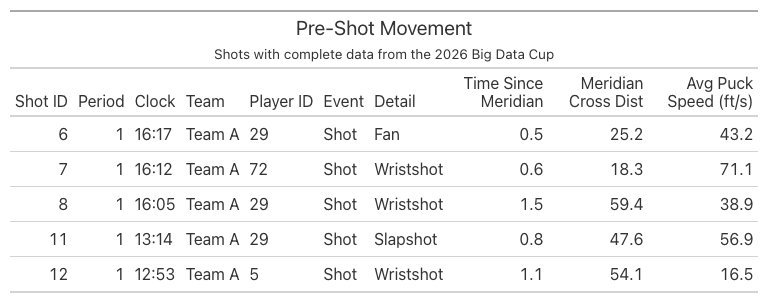
Traffic
Section 2.4.1.5 of the thesis models traffic with goal-face occlusion. For each skater on the ice, draw a straight line from the shooter through that skater and extend it to the goal line. Where that line crosses the goal line is, in effect, the “shadow” that skater casts onto the net from the shooter’s viewpoint. Center a Gaussian (normal distribution) at that shadow point, with a standard deviation of 1.5 ft (a tunable parameter). Then integrate that Gaussian over the interval from −3 ft to +3 ft, which is the 6-ft-wide opening of the goal. The end result is goal-face occlusion.
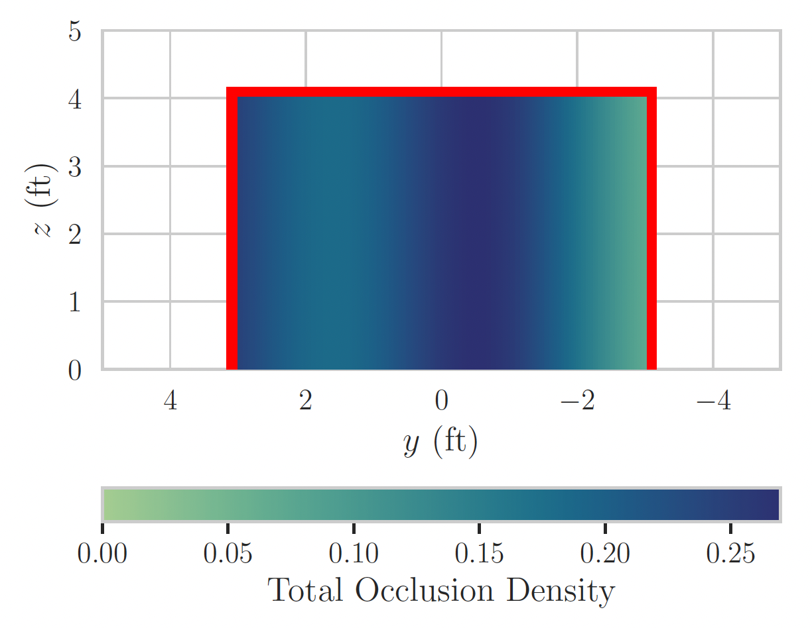
To calculate occlusion, we take the player tracking data with goaltenders removed and left-join it onto the shots dataset, pairing each shot with every skater on the ice at its release frame, then drop the shooter row. For each remaining skater, we use the linear interpolation equation below to find where the line from the shooter through that skater crosses the goal line, i.e. its y-intercept on the goal line.
import numpy as npSIGMA =1.5# Gaussian standard deviation (feet)GOAL_HALF =3.0# half-width of goal face (feet)def _normal_cdf_batched(x: np.ndarray) -> np.ndarray:"""Vectorised normal CDF using math.erf identity: Φ(z) = 0.5*(1+erf(z/√2))."""return0.5* (1.0+ np.vectorize(math.erf)(x / math.sqrt(2)))# --- Per-shot info in tracking coordinates (reuses release match) ---shot_info = ( shots.join(release.select(["shot_id", "Frame", "used_flip"]), on="shot_id", how="left") .with_columns(# Shot location in tracking coords pl.when(pl.col("used_flip")).then(-pl.col("X_Coordinate")).otherwise(pl.col("X_Coordinate")).alias("Shot_X"), pl.when(pl.col("used_flip")).then(-pl.col("Y_Coordinate")).otherwise(pl.col("Y_Coordinate")).alias("Shot_Y"), ) .with_columns(# Goal line: +89 if attacking right, −89 if attacking left pl.when(pl.col("Shot_X") >0).then(pl.lit(89.0)).otherwise(pl.lit(-89.0)).alias("goal_x"), ) .select(["shot_id", "Game", "Period", "Frame", "Track_Team", "Player_Id", "Shot_X", "Shot_Y", "goal_x"]))# --- All non-goalie skaters at each shot's release frame ---skaters_at_frame = ( players .filter(pl.col("Jersey") !="Go") .select(["Game", "Period", "Team", "Jersey", "Frame","Rink Location X (Feet)", "Rink Location Y (Feet)"]) .rename({"Rink Location X (Feet)": "sk_x", "Rink Location Y (Feet)": "sk_y"}))# Join each shot with every skater present at the release frame, then drop the shooter.occlusion_pairs = ( shot_info.join( skaters_at_frame, left_on=["Game", "Period", "Frame"], right_on=["Game", "Period", "Frame"], how="left", )# Exclude the shooter (same team in tracking namespace + same jersey) .filter(~((pl.col("Track_Team") == pl.col("Team")) & (pl.col("Player_Id") == pl.col("Jersey"))) ) .filter(pl.col("sk_x").is_not_null() & pl.col("sk_y").is_not_null())# Compute y-intercept on the goal line .with_columns( (pl.col("Shot_Y")+ (pl.col("sk_y") - pl.col("Shot_Y"))* (pl.col("goal_x") - pl.col("Shot_X"))/ (pl.col("sk_x") - pl.col("Shot_X")) ).alias("y_goal") )# Drop degenerate cases: skater at same x as shooter, or intercept is undefined .filter(pl.col("y_goal").is_not_null() & pl.col("y_goal").is_finite()))# Compute Gaussian contribution per skater via map_batchesocclusion_pairs = occlusion_pairs.with_columns( pl.struct(["y_goal"]).map_batches(lambda s: pl.Series( _normal_cdf_batched((GOAL_HALF - s.struct.field("y_goal").to_numpy()) / SIGMA)- _normal_cdf_batched((-GOAL_HALF - s.struct.field("y_goal").to_numpy()) / SIGMA) ), return_dtype=pl.Float64, ).alias("occlusion_contribution"))# Sum per shottotal_occlusion = ( occlusion_pairs .group_by("shot_id", maintain_order=True) .agg( (1.0- (1.0- pl.col("occlusion_contribution")).product()) .alias("total_occlusion") ))shot_occlusion = ( shots.join(total_occlusion, on="shot_id", how="left") .select("Period", "Clock", "Team", "Player_Id", "Event", "Detail_1","X_Coordinate", "Y_Coordinate", "total_occlusion", ))
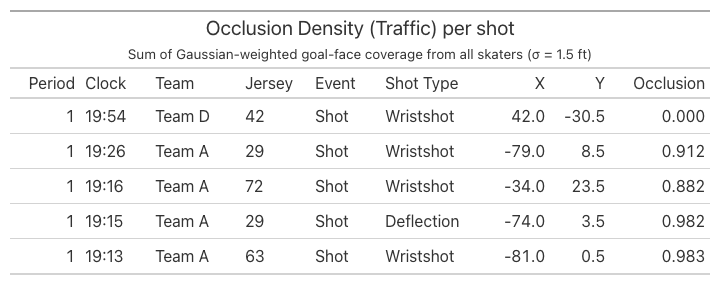
Goaltender Positioning
Section 2.4.1.6 of the thesis deals with features related to goaltender positioning, goaltender angle and depth relative to the goal center. Figure 2.9 illustrates goaltender angle \(\zeta\) and depth \(d_g\):
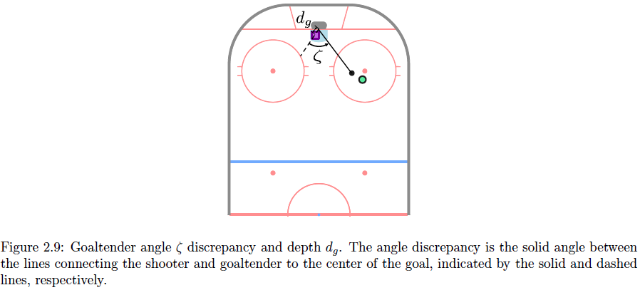
The figure shows that an angle near 0° means the goalie is squared up to the shooter, while a larger angle means they are off-angle, leaving more of the net exposed. The depth, meanwhile, captures how far the goalie has ventured out of the crease.
To compute these two features, we filter the player tracking data for goaltenders and left-join it onto the shots dataset. For each shot, we form two vectors from the goal center — (89, 0) or (−89, 0) — one pointing to the shooter and the other to the goaltender. The angle between these vectors gives the goaltender angle, and the length of the goaltender vector gives the goaltender depth.
Show code
# Per shot: defending team, release frame, shot location in tracking coords, goal center.shot_goalie_ctx = ( shots.join(release.select(["shot_id", "Frame", "used_flip"]), on="shot_id", how="left") .with_columns( pl.when(pl.col("Track_Team") =="Home").then(pl.lit("Away")) .otherwise(pl.lit("Home")).alias("Def_Team"), pl.when(pl.col("used_flip")).then(-pl.col("X_Coordinate")) .otherwise(pl.col("X_Coordinate")).alias("Shot_X"), pl.when(pl.col("used_flip")).then(-pl.col("Y_Coordinate")) .otherwise(pl.col("Y_Coordinate")).alias("Shot_Y"), ) .with_columns(# Goal line: +89 if attacking right, −89 if attacking left. pl.when(pl.col("Shot_X") >0).then(pl.lit(89.0)).otherwise(pl.lit(-89.0)).alias("goal_x"), ) .select(["shot_id", "Game", "Period", "Def_Team", "Frame", "Shot_X", "Shot_Y", "goal_x"]))# Defending goaltender's tracked position at each shot's release frame.goalies = ( players .filter(pl.col("Jersey") =="Go") .select(["Game", "Period", "Team", "Frame","Rink Location X (Feet)", "Rink Location Y (Feet)"]) .rename({"Rink Location X (Feet)": "goalie_x", "Rink Location Y (Feet)": "goalie_y"}))goaltender_positioning = ( shot_goalie_ctx .join( goalies, left_on=["Game", "Period", "Def_Team", "Frame"], right_on=["Game", "Period", "Team", "Frame"], how="left", )# One goalie per team-frame is expected; guard against duplicate tracks. .group_by("shot_id", maintain_order=True) .first() .with_columns(# Vectors from the goal center to the shooter and to the goalie. (pl.col("Shot_X") - pl.col("goal_x")).alias("s_x"), pl.col("Shot_Y").alias("s_y"), (pl.col("goalie_x") - pl.col("goal_x")).alias("g_x"), pl.col("goalie_y").alias("g_y"), ) .with_columns( (pl.col("s_x") **2+ pl.col("s_y") **2).sqrt().alias("s_mag"), (pl.col("g_x") **2+ pl.col("g_y") **2).sqrt().alias("g_mag"), (pl.col("s_x") * pl.col("g_x") + pl.col("s_y") * pl.col("g_y")).alias("dot"), ) .with_columns(# d_g: distance from the goaltender to the goal center. pl.col("g_mag").alias("goaltender_depth"),# ζ (degrees): undefined when shooter or goalie sits exactly at the goal center. pl.when((pl.col("s_mag") >0) & (pl.col("g_mag") >0)) .then( (pl.col("dot") / (pl.col("s_mag") * pl.col("g_mag"))) .clip(-1.0, 1.0).arccos() * (180/ math.pi) ) .otherwise(None) .alias("angle_discrepancy"), ) .select(["shot_id", "angle_discrepancy", "goaltender_depth"]))# Attach to the shots table for use as expected-goals model features.shot_goaltender = ( shots.join(goaltender_positioning, on="shot_id", how="left") .sort(["Period", "Clock_Seconds"], descending=[False, True]) .select("Period", "Clock", "Team", "Player_Id", "Event", "Detail_1","angle_discrepancy", "goaltender_depth", ))
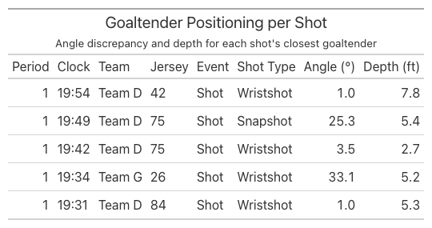
Feature-Based Expected Goals (xG) Model
With feature engineering complete, we join all of the features above on shot_id to assemble a single modeling dataset. The result spans 10 games and holds 1,190 shots across 21 columns, 58 of which are goals.
Show code
# Shot Location was computed display-only above, so its features are recomputed here# keyed by shot_id (same logic: normalize to the right side, then angle/distances).shot_location = ( shots# Normalize to right side .with_columns( pl.when(pl.col("X_Coordinate") <0) .then(-pl.col("X_Coordinate")) .otherwise(pl.col("X_Coordinate")) .alias("X_Coordinate"), pl.when(pl.col("X_Coordinate") <0) .then(-pl.col("Y_Coordinate")) .otherwise(pl.col("Y_Coordinate")) .alias("Y_Coordinate"), )# Shot angle (degrees), meridian distance, and distance to goal .with_columns( ( pl.arctan2(pl.col("Y_Coordinate"), 89- pl.col("X_Coordinate")) .abs()* (180/ math.pi) ).alias("Shot_Angle"), pl.col("Y_Coordinate").abs().alias("d_m"), ) .with_columns( ((89- pl.col("X_Coordinate")).pow(2) + pl.col("Y_Coordinate").pow(2)) .sqrt() .alias("shot_distance"), ) .select("shot_id", "Shot_Angle", "d_m", "shot_distance"))# Unify all expected-goals features into one per-shot dataset by joining on shot_id.shot_features = ( shots.select("shot_id", "Period", "Clock", "Clock_Seconds", "Team", "Player_Id", "Event", "Detail_1") .with_columns((pl.col("Event") =="Goal").cast(pl.Int8).alias("is_goal"))# Shot Location .join(shot_location, on="shot_id", how="left")# Shooter Motion .join( shot_speeds.select("shot_id", "shooter_speed_fps", "shooter_speed_mph", "match_quality"), on="shot_id", how="left", )# Pressure .join(pressure, on="shot_id", how="left")# Pre-Shot Movement .join(crossings, on="shot_id", how="left") .join(avg_speed, on="shot_id", how="left")# Traffic .join(total_occlusion, on="shot_id", how="left")# Goaltender Positioning .join(goaltender_positioning, on="shot_id", how="left") .sort(["Period", "Clock_Seconds"], descending=[False, True]) .drop("Clock_Seconds") .drop("avg_puck_speed_mph"))# Final output:# A single table with one row per shot and all expected-goals features ready for modeling.shot_features
The resulting dataset, with one row per shot and every feature attached, looks like this:
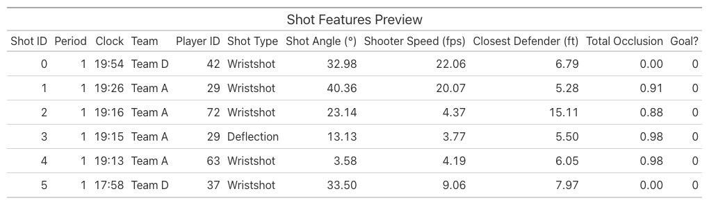
XGBoost
Section 2.4.2 of the thesis lays out how to train an XGBoost model on the dataset. As the thesis emphasizes, the goal is not to classify each shot as a goal or non-goal, but to estimate its probability of becoming a goal. Since the output is a probability, the model is evaluated with three metrics: binary cross-entropy loss and the Brier score, which directly score probabilistic predictions, along with the area under the receiver operating characteristic curve (AUC).
We adopt the hyperparameters from the thesis: a maximum tree depth of 4, 125 trees, and a learning rate of 0.075. Because goals are rare, the target variable is heavily imbalanced, with only 4.9% of shots labeled as a goal, so we evaluate the model with stratified 5-fold group cross-validation, which preserves that goal rate within each fold. With 10 games in the dataset, each fold trains on the equivalent of 8 games and tests on the remaining 2 games.
Show code
import xgboost as xgbfrom sklearn.model_selection import StratifiedGroupKFoldfrom sklearn.metrics import log_loss, brier_score_loss, roc_auc_scoreFEATURES = [# Shot Location"Shot_Angle", "d_m", "shot_distance",# Shooter Motion"shooter_speed_fps",# Pressure"closest_def_dist", "second_closest_def_dist",# Pre-Shot Movement"time_since_meridian", "meridian_cross_dist", "avg_puck_speed_fps",# Traffic"total_occlusion",# Goaltender Positioning"angle_discrepancy", "goaltender_depth",# Shot type"Detail_1",]# Excluded: identifiers (shot_id/Period/Clock/Team/Player_Id), Event (it *is* the# target), match_quality (data-quality flag), and the *_mph speed duplicates.model_df = shot_features.to_pandas()X = model_df[FEATURES].copy()X["Detail_1"] = X["Detail_1"].astype("category")y = model_df["is_goal"].to_numpy()groups = model_df["Game"].to_numpy() # split by game so no game leaks across folds# Hyperparameters from the cited paper (selected there via cross-validation):# tree depth 4, 125 trees, learning rate 0.075.xgb_params =dict( max_depth=4, n_estimators=125, learning_rate=0.075, objective="binary:logistic", eval_metric="logloss", tree_method="hist", enable_categorical=True, # native handling of the shot-type categorical random_state=42,)# Pooled out-of-fold predictions: each fold's model predicts the shots it never saw.# Grouped by game so every test fold is made of whole games the model never trained on# (avoids leaking game-specific signal across folds); stratified to keep each fold near# the overall goal rate.cv = StratifiedGroupKFold(n_splits=5, shuffle=True, random_state=42)oof_prob = np.full(len(y), np.nan)for train_idx, test_idx in cv.split(X, y, groups): model = xgb.XGBClassifier(**xgb_params) model.fit(X.iloc[train_idx], y[train_idx]) oof_prob[test_idx] = model.predict_proba(X.iloc[test_idx])[:, 1]assertnot np.isnan(oof_prob).any()# No-skill baseline: predict the base rate for every shot.base_rate = y.mean()baseline_prob = np.full(len(y), base_rate)metrics = pl.DataFrame({"Metric": ["Binary cross-entropy","Brier score","ROC AUC", ],"Model": [ log_loss(y, oof_prob), brier_score_loss(y, oof_prob), roc_auc_score(y, oof_prob), ],"Baseline": [ log_loss(y, baseline_prob), brier_score_loss(y, baseline_prob),0.5, ],})
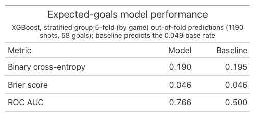
Our metrics are not as impressive as those in the thesis’s Table 2.4, largely because of the gap in sample size. The thesis works with 79,624 shots, of which 4.08% are goals, while our dataset has just 1,190 shots — roughly 67 times fewer. The difference in goals is just as stark: the thesis trains and evaluates on 3,248 goals, compared to our 58 goals.
We calculate absolute SHAP values, which quantify the impact of each feature on the model’s predictions.
This plot closely resembles Figure 2.11 from the thesis, which shows that Shot Distance and Meridian distance are the two most important features to the xG model. Interestingly, our plot illustrates that shot type and total occlusion are the two least important features.
TabPFN
We explore the TabPFN model, which is designed to handle tabular data with high efficiency and accuracy. This model is particularly well-suited for our dataset, given its structure and the types of predictions we aim to make.